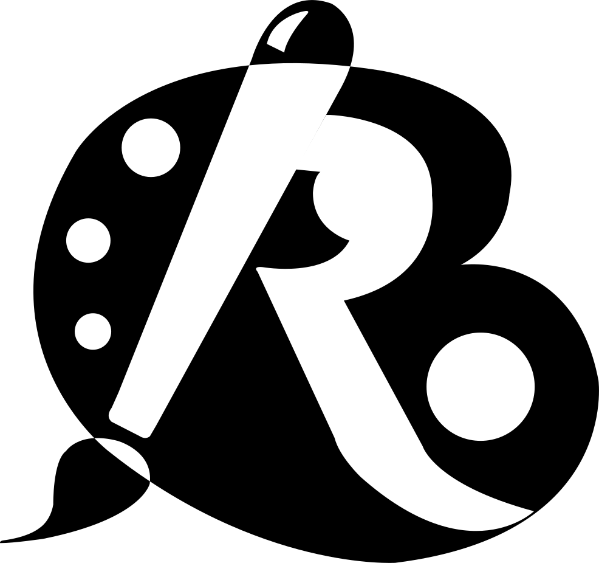
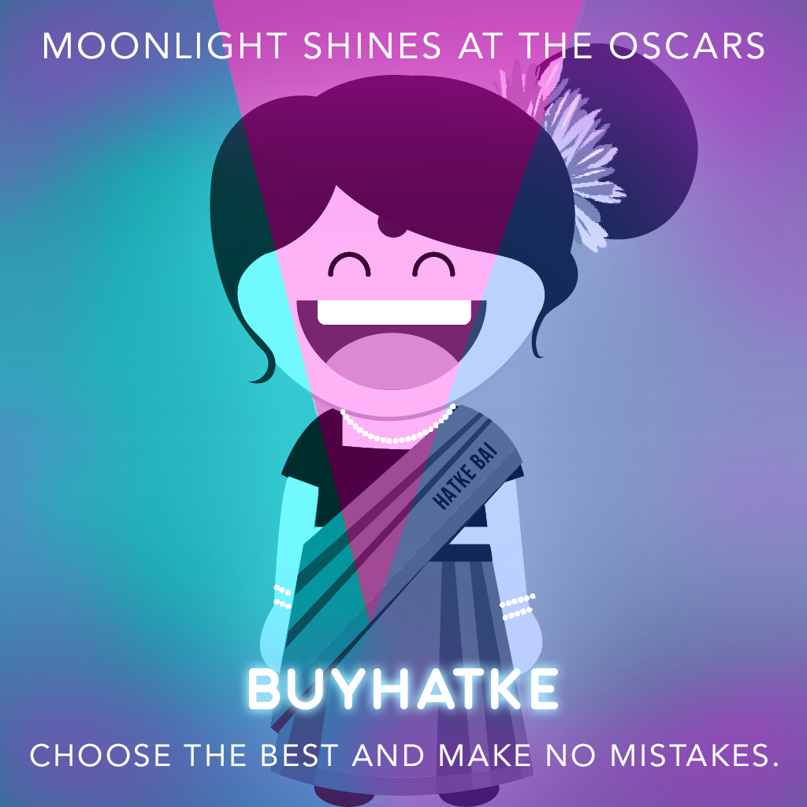
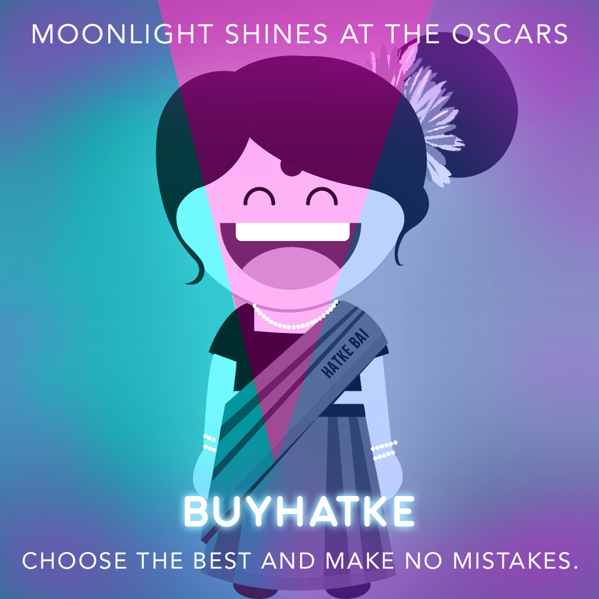

Hoi! I am Ramee
I'm a Graphic/ UX designer living in Amsterdam, NL
Say hi! bordoloi.ramee@gmail.com.Below are some examples of my work. More about me

Say hi! bordoloi.ramee@gmail.com.Below are some examples of my work. More about me


Tact is a personal sales assistant app built on Salesforce. I worked alongside the engineering manager and developers to build the map feature. Users can now see contacts, companies, and events in a map view. Users can also see which contacts are nearby with the 'nearby contacts' feature.
Cogent is an enterprise admin tool. I designed the interface to manage notification settings for various clients which used to be a manual and error prone process. After several user interviews and iterative meetings, I made user personas and discussed technical challenges involved with the developers. Involving key stakeholders helped me understand the problem better and we got good feedback.
I love working on illustrations and experimenting with different styles, both on and off work. I try to visualize the actions and emotions in the real world and translate them into meaningful digital illustrations.
 



Hatke bai is a virtual online shopping assistant who helps shoppers make informed buying decisions. I initially designed this as an assignment. Over time she really lived up to being the mascot. You can find her in Buyhatke's social media campaigns, app coupons, website and official merchandise.
Bitbns is one of India's leading crypto trading platform. I was a core team member in designing the product's branding and visuals.
AMSS implemented mass campaign against the practice of ‘Witch Hunting’ in Goalpara district with support of National Mission for Women Empowerment. I was selected from a pool of designers to undertake this project. I set up the team and we completed this project on time. We made a short film on the issue of witch hunting to create awareness among the mass.